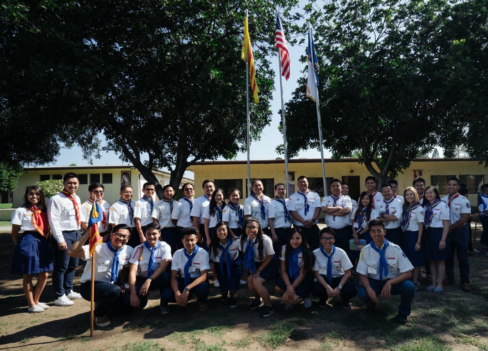
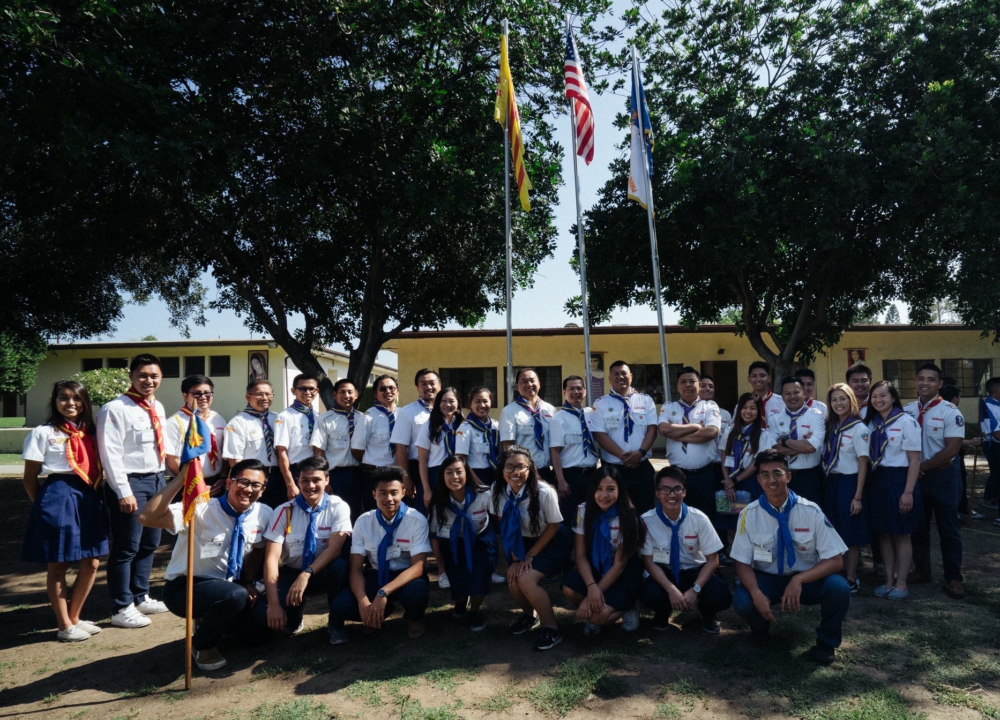
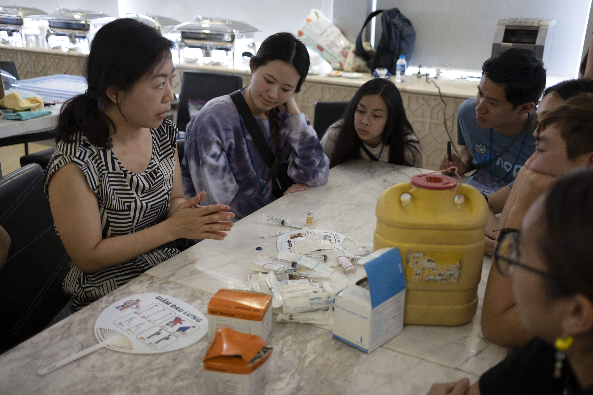
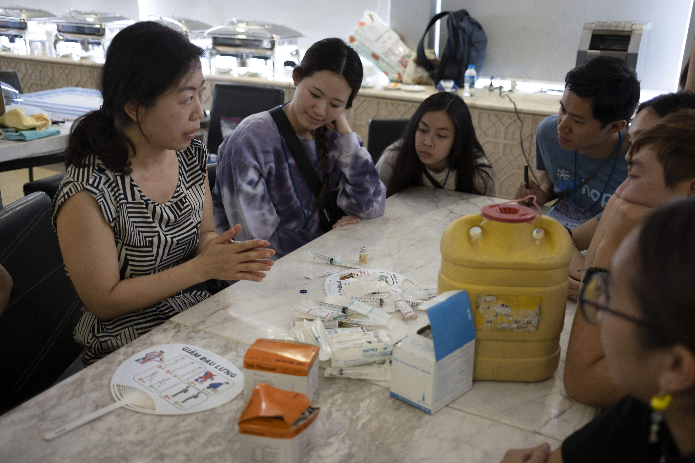
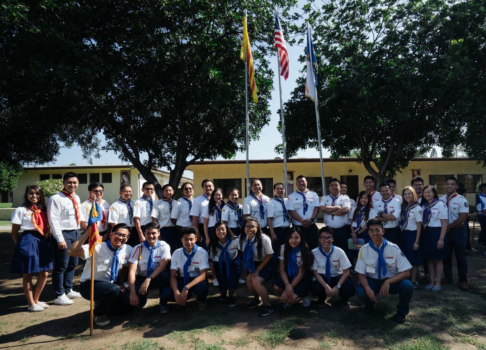
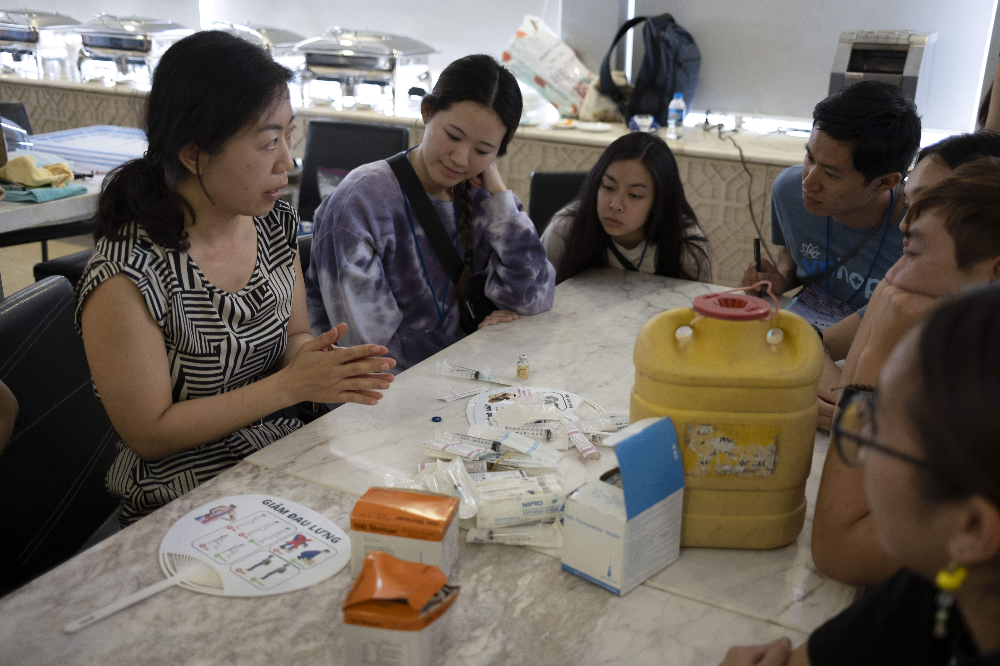

Jessica N Dang
Upon obtaining a B.S. in Biology at the University of California, Riverside in 2021, I have been applying knowledge I gained from my time at the institution to my workspaces post grad. University education has allowed me to hone my skills in laboratory and clinical settings. It has also given me the resources to build my knowledge on science related subjects, bettering my understanding of the foundations of the careers in healthcare that I am considering. In addition to biology and chemistry labs, I have participated in a Dynamic Genome course, a more research oriented lab class that focused on spider silk protein production. By recreating the silk in a cost efficient way, healthcare professionals can use it in medical equipment as its fibrous properties are strong and application of the silk to wounds show exceptional healing results. The importance of research was realized through taking this course; I was able to run and analyze PCR samples, extract protein from spiders, create primers, and write a research paper, all of which contributed to my professor's published study on the topic. Aside from academics at UCR, I was actively involved in a cultural club (VSA) and played intramural sports for co-ed volleyball.
I am now working for and have been volunteering at a hospital in Fountain Valley, California since the beginning of the summer of 2017. I am experienced with patient care services, hospital facilities, and outside clinics. I have often shadowed nurses and worked with phlebotomists in the hospital through my phlebotomy externship and volunteering services. I have also shadowed and assisted doctors, physician associates, a nurse practitioner, and various medical staff while working at FVRH, Bio-Path, Dr. Tieu's OB-GYN clinic, and Intercare Medical Clinic. Outside of my in person exposures to the world of medicine, shadowing virtually presented me with many interesting clinical cases and new perspectives in varied specialties, while also familiarizing me with what DO vs MD doctors do. My prior experience working at a restaurant enabled me to be well-versed in providing quality customer service, making it easier for me to converse with patients now. I have taken many laboratory courses including but not limited to chemistry, biology, dynamic genome, and microbiology, all of which prep me for future research. I grew up Catholic and am a leader within a church organization for youths (TNTT). Nowadays I come out when I have spare time, but usually I would teach a group of kids every weekend and help host events for TNTT when needed. These experiences and activities help improve my socialization, communication, and leadership skills, which are essential when being around diverse demographics of people. They demonstrate my competence to quickly adapt to any type of situation, and allow me to improve the quality of my patient care services.
Apart from those pursuits, I enjoy playing volleyball in my free time, whether it be at school, church, or open gyms. I like learning languages, playing instruments, and creating art. Traveling is another passion of mine, especially since I studied abroad at Yonsei University in South Korea and went on a medical mission in Vietnam with VnHOPE. Presently, I am trying to pursue a career in medicine. Research on biomedical devices and new patient treatment options is something that greatly intrigues me as well; I would love to take part in researching those topics later on, should any opportunities arise.
Activities
TNTT Church Youth Group Leader
• Create and teach lessons to kids (5-17 yrs)
• Organize and plan events
• Lead weekly activities for members
• Help set up camps
• Play and co-coach volleyball
Vietnamese Student Association
• Strengthen cultural background and build connections within the community
• Big and Little Mentoring Program
Dynamic Genome Course
• Polymerase chain reaction (PCR)
• Electrophoresis
• Computer data analysis
• DNA extraction
• Pipetting/Aliquoting
• Centrifuging
• Primer creation
R'Abilty Notetaker
• Take notes and upload them for students with disabilities to view
• Biology 5B
VPASC (Vietnamese Physicians Association of Southern California) Volunteer
• Set up and monitored interviewing stations for mock medical interviews from physicians
UCR Brain Game Center Research Participant
• Log daily meals
• Play brain fitness mobile games that test memorizing, visionary, learning, and auditory skills
Experience
Hospital Volunteer
• Patient Care
• Escort and discharge patients
• Translate and answer calls
• Transport and sort out paperwork for HR
• Sanitize gurneys, wheelchairs, and workspace
• Dietary work
Student Phlebotomist
• Draw blood from 120+ patients (all ages)
• Perform capillary punctures
• Use vacutainers and butterflies
• Centrifuge/aliquot samples
Server
• Host and serve
• Work the cash register
• Flambé and prepare entree in front of customers
• Clean, sweep, and mop restaurant when opening/closing
Phlebotomy Externship/Shadowing
• Shadow and assist phlebotomists
• Perform heel sticks (babies in NICU included)
• Perform venipunctures and dermal punctures
• Use vacutainers, butterflies, and syringes
• Take blood cultures
• Experience in various wards within the hospital
• Graveyard and regular shifts
Radiology Front Desk Representative
• Assist reading and interventional radiologists
• Schedule scans and IR (invasive procedures)
• Page on-call staff (US, NM, MRI, XR)
• Notify nurse or registry for PICC lines and midlines
• Monitor/create worklists
• Enter critical values for stroke patients
• Utilize Cerner program
• Send out images and reports
Shadow OB-GYN MD and PA-C
• Assist in and shadow medical procedures
• IUD insertions/removals
• Pap smears
• Antepartum/post partum check ups
• Transvaginal US
• NST (Non Stress Test)
• EMB (Endometrial biopsies)
• WWE (Well Woman Exams)
• Vaginal cultures
Pathology Assistant
• Assist pathologists and pathology coordinator
• Send specimens/reports out to testing facilities
• Order stains for slides
• Utilize PowerPath program
• Accession new patient visits
• Receive frozen sections and observe procedures
• Record send outs and returned blocks/slides
• Collect lab fees from cash patients in OB
Phlebotomist/MA
• Assist an M.D. (Internal Medicine), PA-C, and FNP-C
• Draw blood and take urine samples from adult patients
• Use vacutainers and butterflies
• Send samples to Quest, LabCorp, CMB, ABC, etc.
• Centrifuge/aliquot samples
• Take vitals
• Give injections (under supervision)
• Utilize Practice Fusion program
Shadow Virtually
• 15 hours
• Gastroenterology, trauma surgery, pediatrics, internal medicine, hospice and palliative medicine, etc.
Student Volunteer
• Work alongside various physicians, dentists, optometrists, pharmacists, and other students
• Provide free healthcare services to more than 4,000 patients across two clinic sites: Dong Nai and Tay Ninh
• Present the topic of hypertension to the VNHope organization
• Assist with pap smears and shadowed in gynecology
• Perform vitals and other measurements:
- blood pressure, temperature check, hemoglobin & oxygen saturation rates, glucose testing, height & weight recordings, etc.
• Shadow and assist with steroid injections in pain management
• Perform fluoride varnishes and shadowed pediatricians
• Distribute, sort, count, and gather pills & medications in pharmacy
• Sterilize dental tools and shadowed dentists
• Assist in optometry tests for myopia, hyperopia, and cataracts
• Shadow primary care physicians (internal and family medicine)
• Donate supplies to orphanages and soup kitchens
• 252 volunteer hours
Awards
Education
Univeristy of California, Riverside
US Colleges in Anaheim
Yonsei University (South Korea)
edX
Irvine Valley College/Saddleback College
Skills
Languages
• Vietnamese
• Spanish
• Korean
• C++, C, and html
Mechanical skills
• Powerpoint
• Spreadsheet
• Photoshop
Laboratory skills
• Transformation
• Electrophoresis
• Computer data analysis
• DNA extraction
• Pipetting
• Centrifuging
• Aliquoting
• Primer creation
Portfolio
Laboratory

Aseptic and streak techniques in Microbiology

VSA


Volleyball


Yonsei University
Phlebotomy
TNTT
 


UCR Graduation


VNHOPE
VnHOPE Team D

VnHOPE All Teams

Presentation on Hypertention
 

Clinic Training

Pill Counting


Suturing Class by Dr. Ho and Dr. Le

Pharmacy
Optometry
Pediatrics Fluoride Varnish Test
Primary Care

Vitals

Pain Management Steroid Injections
Patients Waiting

Clinic in Dong Nai

Clinic in Tay Ninh
VnHOPE Gala
VnHOPE Certified Hours
© Jessica N Dang
Laboratory
Aseptic and streak techniques in Microbiology
VSA
Volleyball
Yonsei University
Phlebotomy
TNTT

UCR Graduation
VNHOPE
VnHOPE Team D
VnHOPE All Teams
Presentation on Hypertention

Clinic Training
Pill Counting
Suturing Class by Dr. Ho and Dr. Le
Pharmacy
Optometry
Pediatrics Fluoride Varnish Test
Primary Care
Vitals
Pain Management Steroid Injections
Patients Waiting
Clinic in Dong Nai
Clinic in Tay Ninh
VnHOPE Gala
VnHOPE Certified Hours